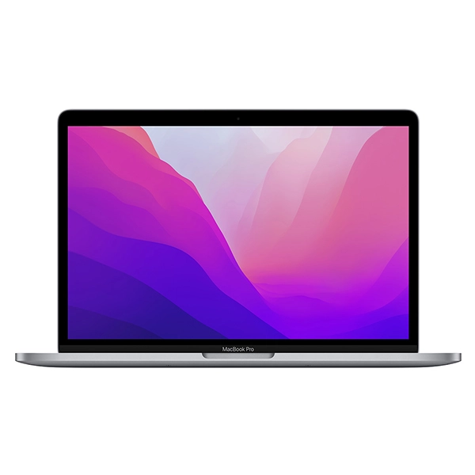

Macbook Pro M2 2022

Warna
Chip
Chip Apple M2
- CPU 8-core dengan 4 core performa dan 4 core efisiensi
- GPU 10-core
- Neural Engine 16-core
- Bandwidth memori 100 GB/dtk
Media engine
- H.264, HEVC, ProRes, dan ProRes RAW yang didukung hardware
- Mesin dekode video
- Mesin enkode video
- Mesin enkode dan dekode ProRes
Layar
Layar Retina
- Layar 13,3 inci (diagonal) dengan lampu latar LED dan teknologi IPS; resolusi 2560 x 1600 pada 227 piksel per inci dengan dukungan untuk jutaan warna
- Kecerahan 500 nit
- Warna luas (P3)
- Teknologi True Tone
Baterai dan Daya1
- Pemutaran film aplikasi Apple TV hingga 20 jam
- Web nirkabel hingga 17 jam
- Baterai lithium-polymer bawaan 58,2 watt‑jam
- Adaptor Daya USB-C 67 W
Memori
- 8 GB memori terintegrasi
Dapat dikonfigurasi menjadi 16 GB atau 24 GB
Penyimpanan2
- SSD 256 GB
Dapat dikonfigurasi menjadi 512 GB, 1 TB, atau 2 TB
Pengisian Daya dan Ekspansi
Dua port Thunderbolt/USB 4 dengan dukungan untuk:
- Pengisian daya
- DisplayPort
- Thunderbolt 3 (hingga 40 Gb/dtk)
- USB 4 (hingga 40 Gb/dtk)
- USB 3.1 Gen 2 (hingga 10 Gb/dtk)
- Jek headphone 3,5 mm
Papan Ketik dan Trackpad
Magic Keyboard berlampu latar dengan:
- 65 tombol (AS) atau 66 tombol (ISO), termasuk 4 tombol panah dalam susunan T terbalik
- Touch Bar
- Touch ID
- Sensor cahaya sekitar
- Trackpad Force Touch untuk kontrol kursor yang akurat dan kemampuan mendeteksi tekanan; mengaktifkan klik Force, akselerator, gambar yang sensitif terhadap tekanan, dan gerakan Multi-Touch
Nirkabel
Wi-Fi
- Jaringan nirkabel Wi-Fi 6 802.11ax
- Kompatibel dengan IEEE 802.11a/b/g/n/ac
Bluetooth
- Teknologi nirkabel Bluetooth 5.0
Kamera
- Kamera FaceTime HD 720p
- Prosesor sinyal gambar canggih menggunakan video komputasional
Audio
- Speaker stereo dengan rentang dinamis tinggi
- Suara stereo berjangkauan luas
- Dukungan untuk Audio Spasial saat memutar musik atau video dengan Dolby Atmos pada speaker bawaan
- Audio Spasial dengan pelacakan gerakan kepala dinamis saat menggunakan AirPods (generasi ke-3), AirPods Pro, dan AirPods Max
- Deretan tiga mikrofon kualitas studio dengan SNR tinggi dan pembentuk sinyal direksional
- Jek headphone 3,5 mm dengan dukungan canggih untuk headphone impedansi tinggi
Dukungan Layar
Secara bersamaan mendukung resolusi asli sepenuhnya pada layar bawaan dalam jutaan warna dan:
- Satu layar eksternal dengan resolusi hingga 6K pada 60 Hz
Output video digital Thunderbolt 3
- Output DisplayPort asli melalui USB‑C
- Output VGA, HDMI, DVI, dan Thunderbolt 2 didukung menggunakan adaptor (dijual terpisah)
Pemutaran Video
- Format yang didukung mencakup HEVC, H.264, dan ProRes
- HDR dengan Dolby Vision, HDR10, dan HLG
Pemutaran Audio
- Format yang didukung mencakup AAC, MP3, Apple Lossless, FLAC, Dolby Digital, Dolby Digital Plus, dan Dolby Atmos
Persyaratan Operasi
- Tegangan listrik: 100 V hingga 240 V AC
- Frekuensi: 50 Hz hingga 60 Hz
- Suhu operasional: 10° hingga 35° C
- Suhu penyimpanan: −25° hingga 45° C
- Kelembapan relatif: 0% hingga 90% non-kondensasi
- Ketinggian beroperasi: teruji hingga 3.000 meter
- Ketinggian penyimpanan maksimum: 4.500 meter
- Ketinggian pengiriman maksimum: 10.500 meter
Ukuran dan Berat
- Tinggi: 1,56 cm
- Panjang: 30,41 cm
- Lebar: 21,24 cm
- Berat: 1,38 kg3
Sistem Operasi
macOS
macOS adalah sistem operasi desktop tercanggih di dunia. macOS Ventura menjadikan segala hal yang sering Anda lakukan di Mac semakin baik lagi, sehingga Anda bisa bekerja lebih cerdas, bermain lebih seru, dan melangkah lebih jauh.
Pelajari lebih lanjut mengenai sistem operasi terbaru
Petunjuk Pengguna macOS
Aksesibilitas
Fitur aksesibilitas membantu penyandang disabilitas memaksimalkan MacBook Pro baru mereka. Dengan dukungan bawaan untuk penglihatan, pendengaran, mobilitas, dan pembelajaran, Anda bisa membuat dan melakukan berbagai hal luar biasa.
Pelajari lebih lanjut mengenai Aksesibilitas
Fitur-fitur meliputi:
- VoiceOver
- Zoom
- Tambah Kontras
- Kurangi Gerakan
- Dikte
- Kontrol Pengalihan
Aplikasi Bawaan4
- App Store
- Buku
- Kalender
- Kontak
- FaceTime
- Lacak
- GarageBand
- Rumah
- iMovie
- Keynote
- Mail
- Peta
- Pesan
- Musik
- Catatan
- Numbers
- Pages
- Photo Booth
- Foto
- Podcast
- Pratinjau
- QuickTime Player
- Pengingat
- Safari
- Pintasan
- Saham
- Time Machine
- TV
- Memo Suara
Isi Kotak
- MacBook Pro 13 inci
- Adaptor Daya USB-C 67 W
- Kabel Pengisian Daya USB-C (2 m)
MacBook Pro dan Lingkungan
MacBook Pro 13 inci dirancang dengan fitur berikut untuk mengurangi dampak terhadap lingkungan:5
Lihat Laporan Lingkungan Produk MacBook Pro 13 inci
Dibuat dengan bahan yang lebih baik
- Unsur logam tanah langka 100% daur ulang dalam penutup magnet, merepresentasikan 46% unsur logam tanah langka dalam perangkat
- Timah 100% daur ulang dalam solder logic board utama
- Aluminium rendah karbon dalam penutup
- 35% atau lebih kandungan plastik daur ulang di berbagai komponen
Hemat energi
- Bersertifikasi ENERGY STAR®6
Proses kimiawi yang lebih cerdas7
- Kaca layar bebas arsenik
- Bebas merkuri, BFR, PVC, dan berilium
Manufaktur ramah lingkungan
- Program Zero Waste Apple membantu para pemasok menghilangkan limbah yang dikirim ke TPA
- Semua lokasi pemasok perakitan akhir kini tengah beralih ke penggunaan 100% energi terbarukan untuk produksi Apple
Pengemasan yang bertanggung jawab
- 100% serat kayu primer berasal dari hutan yang dikelola secara bertanggung jawab
- Kemasan berbasis 90% serat atau lebih
Apple dan Lingkungan
Kami berkomitmen untuk membuat produk tanpa memboroskan sumber daya alam dari bumi, dan mencapai status bebas karbon di seluruh bisnis kami, termasuk produk, pada tahun 2030.
Lihat komitmen Apple
Kinerja Akustik
Kadar emisi kebisingan yang dinyatakan sesuai dengan ECMA-109
| |
Tingkat Daya Bunyi
L W A,m (B) |
Tingkat Tekanan Bunyi
Posisi Operator
L p A,m (dB) |
| Idle |
1,3 (K V = 0,3) |
4 |
| Web Nirkabel |
1,3 (K V = 0,3) |
4 |
- L W A,m adalah rata-rata tingkat daya bunyi berbobot, dibulatkan ke 0,1 B terdekat.
- L p A,m adalah rata-rata tingkat tekanan bunyi berbobot yang diukur di posisi operator (dibulatkan ke 1 dB terdekat).
- 1 B (bel) = 10 dB (desibel)
- K v adalah penambah statistik untuk batas atas komputasi dari tingkat daya bunyi berbobot.
- Kuantitas, L W A,c (sebelumnya disebut L W Ad) dapat dihitung dari jumlah L W A,m dan K v .
- Pengujian web nirkabel menelusuri 6 tab dengan konten beragam, termasuk media.
- Konfigurasi teruji: M2, CPU 8 core, GPU 10 core, memori disatukan 8 GB, penyimpanan 512 GB
- Pengujian dilakukan oleh Apple pada bulan Mei 2022 menggunakan sistem MacBook Pro 13 inci praproduksi berbasis chip Apple M2, CPU 8-core, GPU 10-core, RAM 8 GB, dan SSD 256 GB. Uji web nirkabel mengukur kekuatan baterai dengan menelusuri 25 situs web populer secara nirkabel dengan kecerahan layar diatur 8 klik dari bawah. Uji pemutaran film aplikasi Apple TV mengukur kekuatan baterai dengan memutar konten HD 1080p dengan kecerahan layar diatur 8 klik dari bawah. Kekuatan baterai bervariasi tergantung penggunaan dan konfigurasi. Lihat apple.com/id/batteries untuk informasi selengkapnya.
- 1 GB = 1 miliar byte dan 1 TB = 1 triliun byte; kapasitas terformat aktual lebih sedikit.
- Berat bervariasi, tergantung konfigurasi dan proses manufaktur.
- iMovie, GarageBand, Pages, Numbers, dan Keynote tersedia di Mac App Store. Pengunduhan aplikasi memerlukan ID Apple dan perangkat yang kompatibel dengan versi OS yang diperlukan untuk masing-masing aplikasi.
- Penyajian data akurat sewaktu peluncuran produk.
- ENERGY STAR dan tanda ENERGY STAR adalah merek dagang terdaftar milik Badan Perlindungan Lingkungan AS.
- Apple mendefinisikan batasannya tentang unsur berbahaya, termasuk definisi atas bahan yang menurut Apple "bebas dari", dalam Spesifikasi Bahan yang Diregulasi Apple. Setiap produk Apple bebas dari PVC dan ftalat, kecuali kabel daya di India, Thailand (untuk kabel daya dua pin), dan Korea Selatan, di mana kami terus mengupayakan persetujuan pemerintah untuk pengganti PVC dan ftalat kami.